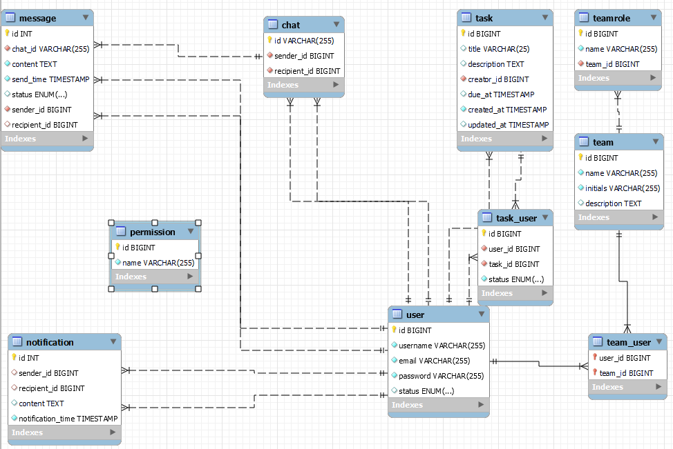

Description
This part of the project documentation focuses on the tools and technologies used in backend of the SyncWave project. We will explain, how the application works, what was challenging, etc.
Spring
The Java Spring Framework is a powerful tool used to build web applications and APIs. It provides a comprehensive programming and configuration model for modern Java-based enterprise applications, helping developers create robust and scalable applications quickly and efficiently.
MySQL
MySQL is a popular relational database management system that uses Structured Query Language (SQL) to manage and organize data. It is widely used for its reliability, ease of use, and capability to handle large amounts of data, making it perfect for both small and large-scale applications.
WebSockets
WebSockets is a technology that enables interactive communication between a user's web browser and a server. Unlike traditional methods where the server must wait for the client to request data, WebSockets allow real-time, two-way data exchange, which is ideal for applications like live chats, gaming, and real-time notifications.

Docker
Docker is a tool designed to make it easier to create, deploy, and run applications by using containers. Containers allow developers to package an application with all its dependencies into a standardized unit, ensuring it runs smoothly in any environment, whether on a developer's local machine, in a data center, or in the cloud.